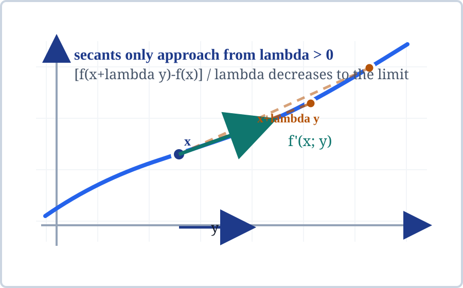
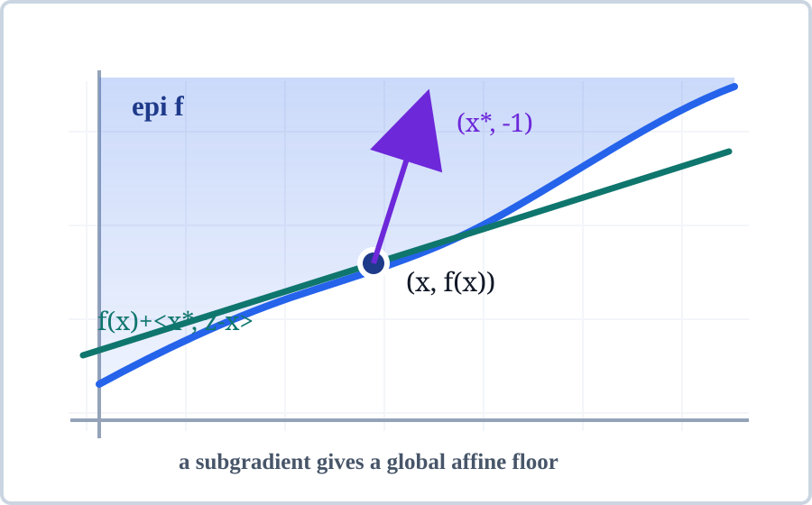
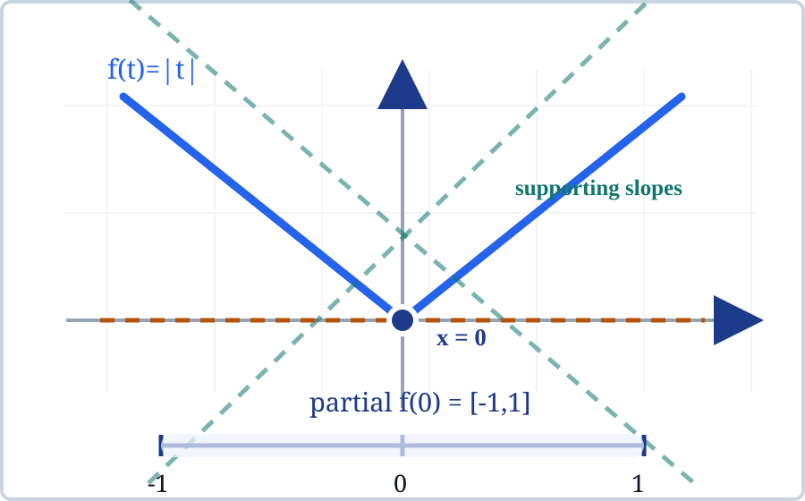
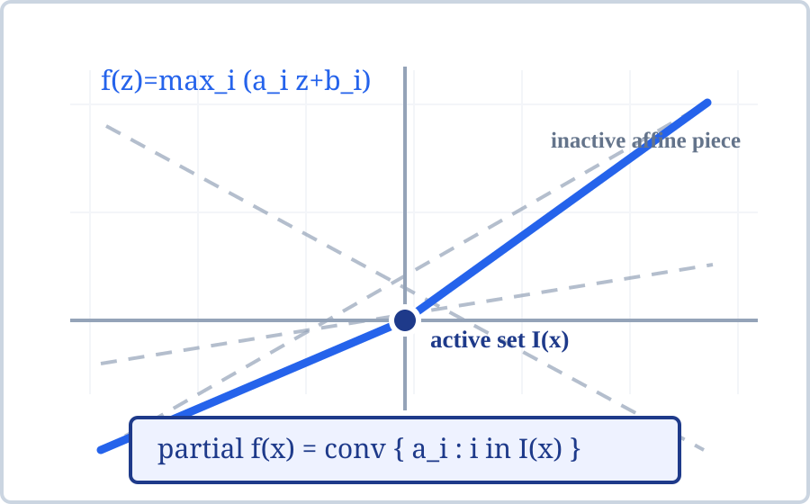

Nonsmooth convex functions still have directional slope data. Subgradients organize that data as supporting hyperplanes to epigraphs.
Turn the formal objects \(f'(x;y)\), \(\partial f(x)\), and \(N_C(x)\) into diagrams and checkable inequalities.
Directional derivatives are support values; subgradients are affine certificates; normal cones are subgradients of indicator functions.
When a tangent plane is not unique, what set of supporting planes replaces the gradient?

\(f'(x;y)=\lim_{\lambda\downarrow 0}\dfrac{f(x+\lambda y)-f(x)}{\lambda}\).
For fixed \(x\) and \(y\), the forward difference quotient is monotone in the step length, so the one-sided limit exists in the extended real line.
The map \(y\mapsto f'(x;y)\) is convex and positively homogeneous. It behaves like a support function even when no unique gradient exists.
Ordinary directional differentiability requires the opposite directions to agree: \(f'(x;-y)=-f'(x;y)\).
\(x^*\in\partial f(x)\) when \(f(z)\ge f(x)+\langle x^*,z-x\rangle\) for every \(z\).
The graph of \(z\mapsto f(x)+\langle x^*,z-x\rangle\) is a nonvertical supporting hyperplane to \(\operatorname{epi} f\) at \((x,f(x))\).
The support hyperplane has normal \((x^*,-1)\). The negative last component is what makes it nonvertical and readable as an affine function.
Touching at \(x\) is not enough. The affine plane must stay below the whole function, not just near the point of contact.

\(x^*\in\partial f(x)\quad\Longleftrightarrow\quad f(z)-f(x)-\langle x^*,z-x\rangle\ge 0,\ \forall z.\)
One proposed slope vector is tested against infinitely many comparison points. A single violation rejects the candidate.
For convex \(f\), a global affine floor can touch the graph and still leave all other values above it.
Ask students to pick \(z\), compute the residual, and watch which proposed slopes survive the test.
\(\partial f(x)=\{x^*: f(z)\ge f(x)+\langle x^*,z-x\rangle\ \hbox{for all }z\}\).
Each comparison point \(z\) cuts out a closed halfspace of allowed \(x^*\). Their intersection is closed and convex.
For a proper convex function, points in \(\operatorname{ri}(\operatorname{dom} f)\) have nonempty subdifferentials.
The set may be empty, a singleton, a line segment, a polytope, or a smooth convex body depending on the local geometry.

For \(f(t)=|t|\), \(\partial f(0)=[-1,1]\).
If \(t>0\), \(\partial f(t)=\{1\}\). If \(t<0\), \(\partial f(t)=\{-1\}\). Smooth pieces give singleton subdifferentials.
Every slope \(s\in[-1,1]\) gives the affine floor \(h(z)=sz\) and satisfies \(|z|\ge sz\) for all \(z\).
The one-sided derivative at zero is \(f'(0;y)=|y|\), the support function of the interval \([-1,1]\).
If \(f(z)=\max_i(\langle a_i,z\rangle+b_i)\), then \(\partial f(x)=\operatorname{conv}\{a_i:i\in I(x)\}\).
\(I(x)\) contains the affine pieces that actually attain the maximum at \(x\). Pieces below the envelope are inactive.
Polyhedral convex functions have polyhedral subdifferentials, and their directional derivatives are support functions of those polytopes.
Two or more active affine pieces create a kink. The allowed supporting slopes fill the convex hull between their gradients.

\(\partial \delta_C(x)=N_C(x)=\{x^*: \langle x^*,z-x\rangle\le 0,\ \forall z\in C\}\).
The indicator is zero on \(C\) and \(+\infty\) outside. The subgradient inequality only has content against feasible comparison points.
For a subdifferentiable \(f\), normals to a strict sublevel boundary are generated by nonnegative multiples of subgradients.
Normal cones are the geometric form of constraints; subgradients are the geometric form of nonsmooth objective slopes.
When the usual closed proper interior hypotheses apply, \(f'(x;y)=\sup_{x^*\in\partial f(x)}\langle x^*,y\rangle\).
A vector \(x^*\) is a subgradient if and only if \(\langle x^*,y\rangle\le f'(x;y)\) for every direction \(y\).
The one-sided derivative is the support function of the subdifferential set. A nonsmooth point is read by probing all its supporting slopes.
At relative boundary directions, the closed support-function picture can differ from the raw directional derivative values.
For convex \(f\), \(x\) minimizes \(f\) exactly when \(0\in\partial f(x)\).
If \(0\in\partial f(x)\), the subgradient inequality becomes \(f(z)\ge f(x)\) for every \(z\).
If \(x\) is a minimizer, the constant affine function \(h(z)=f(x)\) is a global supporting floor.
The condition \(x^*\in\partial f(x)\) is equivalent to equality in \(f(x)+f^*(x^*)=\langle x,x^*\rangle\).
r(z,x^*)=f(z)-f(x)-\langle x^*,z-x\rangle.\quad x^*\in\partial f(x)\Rightarrow r\ge 0.
Finite samples do not prove the theorem, but they catch wrong signs, inactive slopes, and support lines that accidentally cross the graph.
The slide-local JSON records the sampled absolute-value and max-affine tests: assets/subgradient-checks.json.
Change a slope outside the displayed subdifferential and rerun the residual logic. A negative entry tells exactly where the certificate broke.
| Check | Object | Invariant | Status |
|---|---|---|---|
| Absolute value | \(\partial |0|=[-1,1]\) | \(|z|-s z\ge 0\) for sampled \(z,s\) | pass |
| Support function | \([-1,1]\) | \(\sup_{s\in[-1,1]}sy=|y|\) | pass |
| Max-affine kink | active slopes \(-0.5,0.75\) | inactive affine piece has positive gap | pass |
| Optimality | \(f(t)=|t|\) | \(0\in\partial f(0)\) and \(f(0)\le f(t)\) | pass |
If \(f\) is differentiable near \(x\), the subdifferential collapses to one vector.
\(\partial f(x)=\{\nabla f(x)\}\)
A kink can have many affine supports, but still every support is nonvertical and globally valid.
\(\partial |0|=[-1,1]\)
At some domain boundary points the only support behavior is vertical, so no vector \(x^*\) can define a global affine minorant.
\(\partial f(x)=\varnothing\)
Interior of the effective domain is safe; boundary points require inspection.
For a proper convex function, subgradients exist on \(\operatorname{ri}(\operatorname{dom} f)\), and outside the domain the subdifferential is empty.
When differentiability holds in a neighborhood, the subgradient machinery reduces to the classical gradient picture.
| Object | Geometric Read | Formula To Remember |
|---|---|---|
| Directional derivative | one-sided slope in direction \(y\) | \(f'(x;y)\) |
| Subgradient | global affine lower support | \(f(z)\ge f(x)+\langle x^*,z-x\rangle\) |
| Subdifferential | set of all supporting slopes | \(\partial f(x)\) |
| Normal cone | indicator-function subdifferential | \(\partial\delta_C(x)=N_C(x)\) |
| Optimality | flat support at minimum | \(0\in\partial f(x)\) |